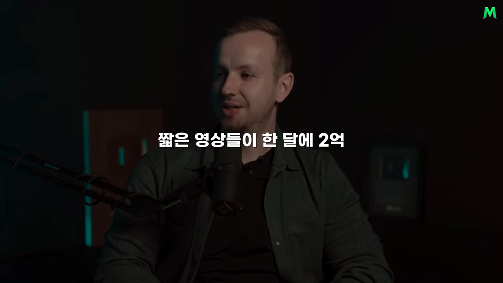
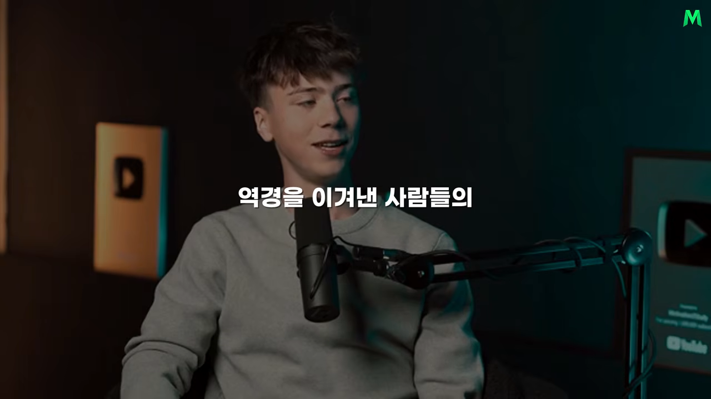

게임 영상에서 동기부여 채널까지
주인공은 캐나다의 매티스 볼트(Mathis Bolt)예요. 'Bolt Motivation'이라는 이름으로 유튜브, 틱톡, 인스타그램에 동기부여 쇼츠를 올려요. 다른 사람이 찍은 장면을 가져와 역경을 이겨 낸 사람의 이야기를 1분 안팎으로 압축하는 방식이에요. 팀 없이 혼자, 한 달에 아홉 편 정도만 올리는데 세 플랫폼을 합쳐 월 2억 5천만 조회수가 나와요.
영상 화면은 처음부터 끝까지 팟캐스트 대담이에요. 아래 왼쪽이 질문하는 진행자, 오른쪽이 매티스예요. 매티스 뒤 벽에는 유튜브 플레이 버튼 상패 두 개가 걸려 있어요.


대담 형식이라 화면에 자료가 없어요. 이 문서의 나머지 그림은 말로 설명한 구조와 숫자를 옮겨 그린 거예요.
좋아하던 분야, 자신에게 맞는 형식
시작은 사업 계획이 아니었어요. 12살 때 포트나이트에 빠져 게임 장면을 이어 붙인 영상을 만들면서 편집이 재미있다는 걸 알았고, 남들이 지나칠 작은 차이를 끝까지 다듬는 습관이 생겼어요.
몇 년 뒤 콘텐츠로 부수입을 버는 사람들을 보고 다시 편집을 시작했어요. 분야는 동기부여였어요. 평소 데이비드 고긴스 영상을 즐겨 보고 달리기와 자기 관리에 빠져 있었거든요. 유행하는 분야를 계산해서 들어간 게 아니라, 무엇을 보면 사람이 다시 일어서고 싶어지는지 이미 감으로 알던 주제를 고른 거예요.
형식은 일부러 짧은 영상을 택했어요. 완벽주의가 강해서 10분짜리를 만들면 끝내기도 전에 처음부터 다시 만들고 싶어질 것 같았대요. 1분 안팎이면 만들고, 올리고, 반응을 보고, 다음 영상에 고치는 순환을 빠르게 돌릴 수 있어요. 자기 성격에 맞는 형식을 고른 게 꾸준함의 출발점이었어요.
200회에서 아르바이트를 그만두기까지
아래 그림은 영상이 말한 성장 과정을 순서대로 놓은 거예요. 오른쪽 끝 칸이 결정적인 전환점이에요.
첫 영상의 조회수는 약 200회였어요. 실망할 수도 있는 숫자인데, 그는 200명이 자기 영상을 봤다는 데 흥분해서 계속 새로 고침을 했대요. 2주쯤 뒤 2만 회짜리가 나왔고, 코비 브라이언트를 다룬 영상은 틱톡에서 100만 회를 넘겨 어머니를 부르며 소리쳤대요.
운이 좋아 보일 수 있지만, 그때 그는 패스트푸드점에서 일하면서 남는 시간을 거의 다 영상에 썼어요. 여름방학 두 달 동안 다른 선택지를 지운 채 몰입했고, 학교로 돌아갈 무렵 틱톡 팔로워가 10만 명을 넘었어요.
전환점은 한 광고 캠페인이었어요. 조회수 천 회당 일정 금액을 주는 방식이었는데, 훨씬 큰 크리에이터들을 제치고 가장 좋은 성과를 냈어요. 약 800만 조회수로 3,000달러를 벌었고, 아르바이트로 몇 달 일해야 받을 돈이라는 걸 확인한 뒤 일을 그만뒀어요. 막연한 자신감이 아니라 시장에서 실력이 돈으로 바뀌는 걸 본 뒤 내린 결정이었어요.
1분 안에 붙잡는 세 단계 이야기 구조
그의 영상이 유독 많이 재생되는 이유로 매티스는 세 단계 이야기 구조를 들어요. 시선을 붙잡는 시작, 결과를 예측할 수 없게 만드는 긴장, 기다림에 보답하는 결말이에요. 아래 막대는 1분짜리 영상 안에서 세 단계가 차지하는 길이를 대략 나눈 거예요. 가운데 긴장 구간이 거의 전부예요.
시작: 가장 강한 3~5초를 맨 앞에
매티스는 가진 원본에서 가장 강한 3~5초를 골라 맨 앞에 둬요. 배경부터 차분히 설명하지 않아요. 누군가 장애물을 넘으려 하거나 결정적인 실패를 맞는 순간처럼, 맥락을 몰라도 눈을 뗄 수 없는 장면이에요. 그다음 시간을 되돌려 이 사람이 누구이고 왜 이 도전이 중요한지 설명해요. 시청자는 이미 결과가 궁금해진 상태라 배경 설명까지 따라와요.
많은 사람이 이 순서를 반대로 해요. 이해를 돕겠다고 배경을 길게 깔고 나서 핵심 장면을 보여 줘요. 그런데 쇼츠는 화면을 한 번 밀면 다음 영상이 바로 나와요. 친절한 설명보다 먼저 필요한 건 이 이야기를 계속 봐야 할 이유예요.
중간: 영상의 90%를 차지하는 긴장
영상 대부분은 긴장을 만드는 데 써요. 매티스는 이 구간이 전체의 약 90%라고 말해요. 핵심은 불확실성이에요. 주인공이 결국 성공한다는 게 너무 빨리 확정되면 시청자는 떠나요. 실패할 수도 있다는 가능성, 예상하지 못한 장애물, 결과를 바꿀 선택이 남아 있어야 다음 장면을 기다려요.
그는 시청 지속 시간 그래프에서 사람들이 빠져나간 지점을 찾고, 거기서 긴장이 풀린 이유를 따져 다음 영상에 반영했어요.
끝: 기다림에 보답하는 결말
마지막에는 반드시 충분한 보상이 있어야 해요. 오래 도전한 선수가 결승선을 통과하거나, 어려움을 견딘 사람이 가족과 포옹하거나, 거만하던 사람이 뜻밖의 방식으로 깨닫는 순간이에요. 시작에서 만든 궁금증과 중간에 쌓은 긴장을 결말이 풀어 줘야 이야기 하나가 완성돼요.
강한 시작만 있고 결말이 약하면 조회수는 나올 수 있어도 시청자에게 좋은 감정은 남지 않습니다.
— 영상 04:22
모든 영상에 같은 공식을 쓰지는 않아요
매티스는 자기 콘텐츠를 인생의 지혜, 따뜻한 선행, 스포츠의 역전, 역경 극복, 통쾌한 반전 같은 몇 묶음으로 나눠 봐요. 이야기형이라면 위의 세 단계가 맞지만, 행동을 직접 촉구하는 영상이라면 다른 순서가 더 어울릴 수 있어요.
| 영상 종류 | 처음 | 중간 | 끝 |
|---|---|---|---|
| 이야기형 (역경 극복, 스포츠의 역전 등) | 눈을 뗄 수 없는 3~5초 장면 | 결과를 알 수 없는 긴장 | 궁금증을 풀어 주는 보상 |
| 행동 촉구형 | 문제를 짚어요 | 그 문제의 고통을 선명하게 보여 줘요 | 구체적인 행동을 제안해요 |
형식보다 중요한 건 시청자의 감정이 어떤 순서로 움직여야 하는지 설계하는 일이라는 게 영상의 정리예요.
소재 찾기와 제작 과정, 그리고 인공지능
경쟁 채널은 일부러 덜 봐요
매티스는 비슷한 채널을 따라 하지 않아요. 많이 보면 자기도 모르게 아이디어와 표현이 닮아 간다고 생각하거든요. 대신 인터넷 문화, 스포츠, 스트리밍 방송, 영화와 시리즈처럼 넓은 곳에서 소재를 찾아요.
어떤 장면을 발견하면 이미 유행했는지만 보지 않아요. '내가 편집하면 열 배 더 좋아질 수 있나'를 따져요. 다만 세상과 담을 쌓는 건 아니에요. 사람들이 지금 무엇에 관심을 두는지는 계속 확인하고, 같은 분야 채널의 결과물 대신 대중의 관심이 모인 원재료를 자기 방식의 이야기로 바꿔요. 영상의 말로는 유행을 베끼는 것과 유행을 해석하는 것은 전혀 다른 일이에요.
원본에서 완성까지 다섯 단계
소재가 정해지면 아래 순서로 만들어요. 가운데 프리미어 프로 단계에서는 효과 없이 순서와 맥락만으로 이야기 뼈대를 세우는 게 포인트예요.
flowchart LR A["가장 화질 좋은 원본 찾기"] --> B["AI 도구로 화질 높이기"] --> C["프리미어 프로: 이야기 뼈대"] --> D["애프터 이펙트: 볼트화"] --> E["AI에게 첫 편집본 피드백 받기"]
원본은 가장 화질 좋은 걸 구해도 흐릿한 경우가 많아서, 인공지능 업스케일링으로 먼저 선명하게 다듬어요. 원래 인터뷰에서도 이 단계를 따로 꼽아요. 기본 편집이 끝나면 애프터 이펙트에서 빛나는 자막, 색감, 전환 효과, 워터마크를 더해요. 매티스는 채널 이름을 따서 이 과정을 '볼트화한다'고 불러요. 화면을 넘기는 사람 눈에 밝고 선명한 영상이 먼저 들어오게 하는 거예요.
그래도 효과가 약한 이야기를 살려 줄 거라고 착각하지는 않아요. 좋은 이야기가 먼저이고, 시각적 완성도는 그 힘을 키우는 장치예요.
인공지능은 옆자리 동료처럼
인공지능은 제작 전반에 들어가 있어요. 쓰는 곳을 정리하면 이래요.
| 어디에 | 무엇을 맡기나요 |
|---|---|
| 기획 | 아이디어와 제목 검토 |
| 원본 고르기 | 긴 원본에서 쓸 만한 순간 찾기. 말만 받아 적은 자막이 아니라 화면과 화자를 함께 이해하는 도구로, 누가 어떤 상황에서 무엇을 말했는지 파악해요 |
| 화질 | 원본 화질 높이기 |
| 검토 | 첫 편집본을 보여 주고 이해하기 어려운 곳, 흐름이 끊기는 곳, 더 강한 장면이 있는지 의견 받기 |
덕분에 긴 원본을 처음부터 끝까지 손으로 뒤지는 시간이 줄었어요. 하지만 인공지능이 초안을 만들었다고 바로 올리지는 않아요. 창작자를 대신하는 자동화 기계가 아니라 옆자리에서 냉정하게 피드백을 주는 동료처럼 써요. 원래 인터뷰에서 그가 이름을 댄 도구는 Google AI(Artificial Intelligence) Studio예요. 다른 도구들은 대본만 읽는데, 이건 화면까지 본다고 설명해요.
그가 빨리 성장한 건 새 도구를 겁내지 않아서라기보다, 그 도구를 자기 판단력을 높이는 데 깊게 썼기 때문이라고 영상은 말해요. 중학생 때, ChatGPT가 널리 퍼지기 전부터 인공지능 서비스의 조기 접근을 신청했고, 이미지 생성 도구가 나왔을 때도 똑같이 먼저 써 봤어요. 주변이 관심을 갖기 시작했을 땐 이미 질문을 잘 만드는 법과 결과를 검증하는 법을 익힌 뒤였어요.
그렇다고 일이 쉬워진 건 아니에요. 영상 한 편에 약 10시간이 들어가요. 하루 대부분을 컴퓨터 앞에서 편집하고, 찾고, 배우고, 새 방식을 시험해요. 짧은 콘텐츠라서 짧게 일한 게 아니라, 짧은 시간 안에 더 많은 판단과 완성도를 밀어 넣은 셈이에요.
숫자로 보는 성과와 수익 구조
성과
최근 영상은 올린 지 약 12시간 만에 유튜브 조회수 700만 회를 찍었고, 채널에서 가장 많이 본 영상은 1억 2천만 회를 넘었어요. 이걸 한 달 아홉 편 정도로 만들어요.
이 숫자에서 중요한 건 사람들이 어떻게 들어오느냐예요. 시청자의 약 95%는 썸네일을 눌러서가 아니라 쇼츠 피드를 넘기다 영상을 만나요. 그래서 첫 장면은 선택이 아니라 생존 조건이에요. 앞 섹션의 '가장 강한 3~5초를 맨 앞에'가 여기서 나와요. 그래도 포장이 필요 없는 건 아니어서, 제목에 신경 쓰기 시작한 뒤 조회수가 더 늘었다고 해요.
유튜브가 돈을 주고, 틱톡과 인스타그램은 길을 넓혀요
수익 면에서는 유튜브가 특별했어요. 아래 막대는 조회수 천 회당 수익이 처음 시작할 때와 지금 얼마인지 비교한 거예요. 약 8센트에서 약 30센트로, 네 배 가까이 올랐어요.
틱톡과 인스타그램은 같은 영상을 올려도 직접 수익이 거의 없었어요. 그래도 세 플랫폼에 모두 올려 도달 범위를 넓혔어요. 영상 하나를 만들 때 플랫폼마다 다른 기회를 동시에 열어 두는 거예요.
| 플랫폼 | 직접 수익 | 올리는 이유 |
|---|---|---|
| 유튜브 | 있어요. 천 회당 약 30센트까지 올랐어요 | 수익, 그리고 옛 영상이 계속 재생돼요 |
| 틱톡 | 거의 없어요 | 도달 범위를 넓혀요 |
| 인스타그램 | 거의 없어요 | 도달 범위를 넓혀요 |
옛 영상이 계속 일해요
유튜브의 또 다른 장점은 새 영상을 올리지 않아도 과거 영상이 꾸준히 재생된다는 점이에요. 매티스는 게시를 멈춰도 한동안 하루 수백 달러 수준의 수익이 이어질 거라고 말해요. 매달 조회수 중 상당 부분이 지난 영상에서 나와요. 한 편씩 쌓인 영상이 새 시청자를 데려오는 자산이 된 거예요.
광고 말고 다른 수익
수익원은 조회수 광고에서 그치지 않았어요. 영상 아래에 자연스럽게 뜨는 문구로 편집 자료를 소개했고, 같은 방식을 인공지능 서비스 광고에도 썼어요.
가장 눈에 띄는 건 소니와의 협업이에요. 예전에 옛 가라테 키드 영화로 만든 편집 영상이 2천만 회 넘게 재생된 걸 보고 소니가 먼저 연락해 왔고, 영화 '가라테 키드: 레전드' 홍보 영상을 만들었어요. 남의 영상을 편집하던 16살이 몇 년 뒤 대형 영화사의 공식 의뢰를 받은 거예요. 실력이 공개적으로 쌓이면 이런 기회가 찾아온다는 예로 영상은 이 일을 들어요.
번아웃, 한 분야에 머무르기, 다음 목표
번아웃은 바꾸라는 신호
영상 한 편에 10시간을 쓰면서 하루 이틀마다 올리려 하면 쉬는 날이 사라져요. 뜻대로 안 되는 시기도 반복됐어요. 매티스는 번아웃을 실패의 증거로만 보지 않았어요. 콘텐츠 방식이나 사업 모델을 바꿔야 한다는 신호로 받아들였고, 자기가 재미있다고 느끼는 소재를 만들며 회복했어요.
그가 보기에 많은 사람이 지치는 이유는 팔로워가 기대할 것 같은 한 가지 형식에 자신을 가두기 때문이에요. 그래서 수백만 명이 구독하고 있어도 자신이 멋지다고 생각하고 사람들에게 좋은 영향을 줄 수 있는 이야기를 골라요. 쇼츠 구독자는 쉽게 구독하는 만큼, 긴 영상을 꾸준히 보는 충성 시청자와 성격이 달라요. 숫자에 끌려다니기보다 자기가 계속 만들 수 있는 기준을 지키는 거예요.
초보가 가장 자주 하는 실수
반대로 초보 창작자들이 가장 자주 하는 실수는 너무 빨리 분야를 바꾸는 거예요. 아래 그림의 왼쪽이 그 흐름이에요. 한 달 해 보고 성과가 없으면 동기부여에서 음악으로, 다시 다른 유행으로 옮겨 가요. 성공한 채널의 겉모습만 따라 하고, 그 방식이 왜 통하는지는 공부하지 않아요.
매티스는 시작할 때부터 동기부여 분야를 떠날 생각을 거의 하지 않았어요. 반응이 약한 영상이 나오면 분야를 버리는 대신 자기 판단과 편집에서 이유를 찾았어요. 한 곳에 오래 집중할수록 실패는 감각을 훈련하는 데이터가 돼요.
다음 목표: 넓히기보다 깊게
그의 다음 목표는 새 사업을 여러 개 벌이는 게 아니에요. 혼자 하던 제작 과정을 정리하고 팀을 꾸려서, 월 2억 5천만 조회수를 5억, 다시 10억으로 키우는 거예요.
당장 강의를 팔 생각도 없어요. 자기가 충분히 해내기도 전에 해내는 법부터 파는 사람이 되고 싶지 않대요. 지금 잘되는 일을 더 깊게 파는 게 먼저라는 판단이에요.
앞으로는 개인 브랜드를 만들고 카메라 앞에 서는 법도 배우고 싶어 해요. 엄청난 조회수를 만든 그도 카메라 앞에서 말하는 건 별개의 기술이라고 인정해요. 처음 영상을 만들 때 아무도 안 봤기에 서툴러도 괜찮았던 것처럼, 새 분야에서도 서툰 자신을 허용하며 배울 생각이에요.
무엇을 하지 않았나
그는 피아노, 체스, 운동, 골프로 화면 밖의 시간도 만들어요. 하지만 꾸준함을 만든 핵심은 무엇을 했느냐보다 무엇을 하지 않았느냐에 있다고 봐요. 파티와 술을 포기하고 늦은 밤까지 혼자 작업하는 시간을 골랐어요. 모두가 같은 삶을 살 필요는 없지만, 큰 목표를 고른다는 건 그 목표와 경쟁하는 다른 선택을 줄이는 일이라는 게 영상의 말이에요.
진행자의 정리
영상 진행자가 가장 중요하게 본 건 매티스가 조회수를 비밀 공식으로 설명하지 않았다는 점이에요. 강한 시작, 긴장, 만족스러운 결말이라는 구조는 분명 쓸모 있어요. 하지만 그걸 실제 성과로 바꾼 건 영상마다 10시간씩 실험하고, 반응이 약할 때 분야를 바꾸지 않고 원인을 찾은 시간이었어요. 인공지능도 그 노력을 없애 주지 않고, 더 좋은 장면을 찾고 더 냉정하게 검토하도록 도왔을 뿐이에요.
자신이 오래 관심을 가질 주제를 정하고 작은 반응을 소중한 신호로 받아들이며 한 번의 결과에서 다음 개선점을 찾는 것. 그렇게 쌓인 감각은 누구도 단기간에 복사할 수 없는 경쟁력이 됩니다.
— 영상 13:03